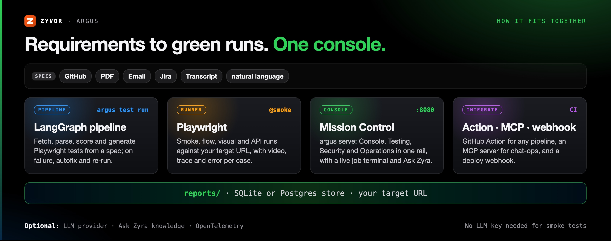
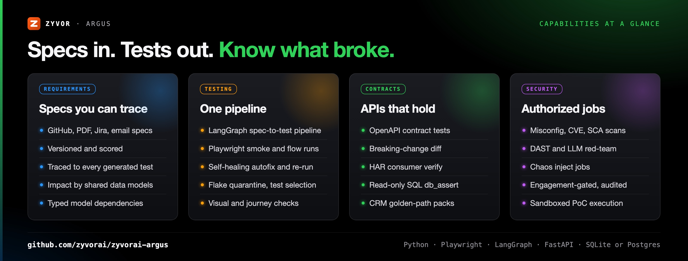

Autonomous QA for the real world
Specs in. Tests out.
Know what broke.
Argus reads your requirements, scores them, generates Playwright tests, runs them on every deploy, and shows what broke — in Mission Control, a live ops console.
How it fits together
From a spec to a trusted signal on every deploy.
Ingest
Requirements from docs, Jira, email or transcripts are parsed, versioned and scored.
Generate & run
Playwright specs are generated, executed on every deploy, and failures are triaged.
See & fix
Mission Control shows what broke; autofix proposes repairs and re-runs.

Everything QA, one console
Requirements, testing, contracts and security — without five separate products.
Requirements traced to tests
Versioned, scored requirements; every generated test links back to a requirement version.
One pipeline
The same LangGraph path from the CLI or a single dashboard click.
Self-healing autofix
Suggests and applies selector repairs, then re-runs.
Contracts
OpenAPI contract tests, breaking-change diff and HAR consumer verify.
Authorized security
Misconfig, CVE, SCA, DAST, LLM red-team and chaos jobs with an audit trail.
Mission Control
Console, Testing, Security and Operations in one rail, with ⌘K search and a live job terminal.
Test intelligence
Flake taxonomy, quarantine with TTL and owner, change-based test selection.
Ask Zyra
Citation-first knowledge Q&A over your docs, with on-box embeddings available.
Integrations
GitHub Action, Jira, Slack, CRM golden-path packs, MCP server and a macOS desktop app.

Argus vs a hand-written Playwright suite
Keep Playwright, lose the busywork. Choose plain Playwright if you have a small, stable suite your engineers already own.
| Argus | Hand-written suite in CI | |
|---|---|---|
| Where tests come from | Generated as .spec.ts from versioned, scored requirements | Written and maintained by hand |
| Spec traceability | Every test linked to a requirement version | By convention, if at all |
| Broken selectors | Autofix suggests and applies a repair, then re-runs | Fixed by hand |
| Flaky tests | Taxonomy, quarantine with TTL, change-based selection | Retries and manual triage |
| API contracts | OpenAPI contract test, breaking-change diff, HAR verify | Separate tooling |
| Security checks | Authorized, engagement-gated jobs with an audit trail | Separate tooling |
| Results | Mission Control with live job terminal | HTML report per run |
Download for Mac
A signed, notarized app with the runtime bundled. Apple Silicon, macOS 12 or later. Chromium downloads on first run.
Quickstart
Python 3.11+, Node 20+. make install handles the rest, including Chromium.
git clone https://github.com/zyvorai/zyvorai-argus.git && cd zyvorai-argus cp .env.example .env # set ZYVOR_BASE_URL make install # Python venv + Playwright Chromium argus test exec --grep @smoke # first green run — no API key argus serve --port 8080 # → http://localhost:8080/dashboard
Know what broke before your customers do
Free for non-production use. Talk to us about production.